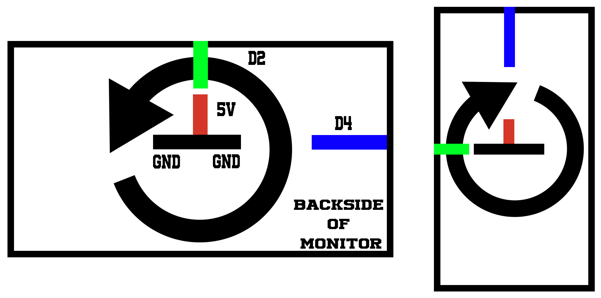

Monitor Auto Rotator using IRotate
As an engineer, I am naturally searching for how to optimize things. After I installed my second monitor I found myself constantly changing it from portrait to landscape and vice versa to better suit my needs at that moment.
This is all well but I somehow feel that there shouldn't be any need for me to actually tell windows that I just changed the monitor's physical orientation and that the software change should happen automatically
Because of this, I created a circuit (if it can be called one) and 2 C++ scripts (one for the Arduino and one running on my PC at start-up).
The SerialPort library used can be found at https://github.com/manashmandal/SerialPort.

This crude yet effective diagram shows that by using only 2 pins the Arduino can detect the current position of the monitor.
The DigitalRead() method will return 1 or HIGH if the pin is power up by 5V and 0 or LOW if grounded. By making the wires long enough and by some rather crude engineering the wires have been fixed in place with tape and touch each other when the monitor is turned thus ensuring a connection.
Arduino Code:
const short NR_OF_POINTS_SAMPLED = 5;
const short in_landscape = 2,
in_portrait = 4;
short landscape_array[NR_OF_POINTS_SAMPLED], portrait_array[NR_OF_POINTS_SAMPLED];
short index;
boolean before_landscape, before_portrait;
void setup() {
Serial.begin(9600);
pinMode(in_landscape, INPUT);
pinMode(in_portrait, INPUT);
landscape_array[NR_OF_POINTS_SAMPLED] = {0};
portrait_array[NR_OF_POINTS_SAMPLED] = {0};
index = 0;
before_landscape = false;
before_portrait = false;
}
void loop() {
if (index == NR_OF_POINTS_SAMPLED) {
if (quantifyArray(landscape_array) && !quantifyArray(portrait_array) && !before_landscape) {
Serial.println(1);
before_landscape = true;
before_portrait = false;
}
else if (quantifyArray(portrait_array) && !quantifyArray(landscape_array) && !before_portrait) {
Serial.println(2);
before_portrait = true;
before_landscape = false;
}
index = 0;
emptyArray(landscape_array);
emptyArray(portrait_array);
delay(100);
}
else {
landscape_array[index] = digitalRead(in_landscape);
portrait_array[index] = digitalRead(in_portrait);
index++;
}
}
boolean quantifyArray(short input[NR_OF_POINTS_SAMPLED]) {
short nr_of_ones = 0;
for (short i = 0; i < NR_OF_POINTS_SAMPLED; ++i) {
if (input[i] == 1) {
nr_of_ones++;
}
}
return nr_of_ones == NR_OF_POINTS_SAMPLED? true : false;
}
void emptyArray(short input_array[NR_OF_POINTS_SAMPLED]) {
for (short i = 0; i < NR_OF_POINTS_SAMPLED; ++i) {
input_array[i] = 0;
}
}
PC Code - cpp
#include "main.hpp"
const byte DATA_LENGTH = 3;
std::string portName = R"(\\.\COM)";
// "/c \"iRotate.exe /2:rotate=x\"" cause https://stackoverflow.com/a/30322471/13806339
std::string command_template = "/c \"iRotate.exe /2:rotate=";
SerialPort *monitor;
char receivedString[DATA_LENGTH];
byte actualPosition = -1;
int main(int argc, char *argv[]) {
ShowWindow(GetConsoleWindow(), SW_HIDE);
//Concatenate the COMPort
std::string temp_str = (portName + argv[1]);
const char *com_c_array = temp_str.c_str();
monitor = new SerialPort(com_c_array);
printf("%s", monitor->isConnected() ? ("Connected to " + std::string(com_c_array) + "\n").c_str() : "not connected\n");
while (!monitor->isConnected()) {
Sleep(1000);
monitor = new SerialPort(com_c_array);
}
while (monitor->isConnected()) {
int hasRead = monitor->readSerialPort(receivedString, DATA_LENGTH);
// So apparently Serial.println() adds \r\n at the end ... makes sense
if (!(receivedString[0] == '\r' || receivedString[0] == '\n') && hasRead > 0) {
byte receivedInt = (byte) (receivedString[0] - '0');
if (actualPosition != (receivedInt)) {
actualPosition = receivedInt;
switch (receivedInt) {
case 1:
executeCMD("0");
break;
case 2:
executeCMD("90");
break;
case 3:
executeCMD("180");
break;
case 4:
executeCMD("270");
break;
default:
break;
}
}
}
Sleep(10);
}
std::atexit(onExit);
return 0;
}
void executeCMD(char const *rotation) {
printf("Rotated to %s degrees\r\n", rotation);
ShellExecuteA(
nullptr,
"open",
R"(C:\WINDOWS\system32\cmd.exe)",
(command_template + rotation + '\"').c_str(),
nullptr,
SW_HIDE
);
}
void onExit() { monitor->closeSerial(); }
PC Code - hpp
// Created by Raul Sîmpetru on 27.07.2020.
#pragma once
#include <iostream>
#include "SerialPort.hpp"
#include <winuser.h>
#include <cstdlib>
#include <string>
void executeCMD(char const *rotation);
void onExit();